# Core package imports along with core functionality
source("R/imports.R")
# Setting seed for reproducibility
set.seed(1234)Adaptive RD demonstration
Introduction
This document demonstrates how to simulate an adaptive regression discontinuity (RD) design and use the resulting data to evaluate the performance of adaptive RD estimators.
In an adaptive RD design, treatment assignment depends on whether a patient’s predicted risk exceeds a decision threshold. Unlike a traditional RD, both the prediction model and the threshold can evolve over time. For example, the threshold may adapt to achieve a target treatment rate or a clinical performance metric, such as the number-needed-to-treat (NNT). The prediction model may also be recalibrated or revised using accumulated patient data.
To simulate such a design, we first define its core components — the study population, the prediction model, the adaptation rules for the threshold or model, and the outcome mechanism. The table below provides a concrete example using cardiovascular risk prediction in the general population.
| Design Component | Cardiovascular Risk Example |
|---|---|
| Inclusion criteria | Adults aged 40–79 in the general population |
| Exclusion criteria | History of cardiovascular disease or contraindication to preventive therapy |
| Model | Risk model predicting 10-year ASCVD risk (e.g., pooled cohort equations [PCE]) |
| Intervention | Referral to preventive care program (e.g., cardiovascular health clinic, medication review, and lifestyle counseling) |
| Comparator | Continue routine care without referral |
| Trigger event | Annual primary care visit |
| Allocation | Automatic referral if predicted risk exceeds the current threshold |
| Threshold adaptation | Threshold chosen to target specific referral rate or desired NNT |
| Model adaptation | Annual model recalibration or revision using most recent data |
| Follow-up period | Six months after index visit |
| Outcomes | Change in systolic blood pressure, referral completion, or occurrence of cardiovascular event |
Load packages
We load the core functions and dependencies needed for data processing, risk prediction, and adaptive thresholding. All package imports are managed through a single script to keep the workflow reproducible and organized.
Build template dataset
To generate realistic patient covariates, we sample with replacement from a cohort constructed using NHANES 2017–2018 data. The helper function build_cohort() reads and merges raw XPT files, filters adults aged 40–79, derives the variables required for PCE risk prediction (age, sex, race, blood pressure, cholesterol, smoking, diabetes, treatment status), imputes missing values, and standardizes variable names. Below, we (1) load the raw data, (2) build cohort_df, and (3) display a baseline summary before simulation.
data_dir <- 'data_raw'
nh_list <- read_nhanes_2017_2018(data_dir)
cohort_bundle <- build_cohort(nh_list, impute = TRUE, summarize = TRUE)
cohort_df <- cohort_bundle$data
rm(list = c("data_dir", "nh_list"))
knitr::kable(cohort_bundle$summary$continuous, caption = "Continuous predictors.")| Variable | N | Missing | Mean | SD | Min | Max |
|---|---|---|---|---|---|---|
| age | 5751 | 0 | 58.2 | 10.6 | 40.0 | 79.0 |
| sbp | 5751 | 868 | 128.5 | 19.4 | 76.3 | 218.7 |
| hdl_c | 5751 | 752 | 53.7 | 16.4 | 5.0 | 187.0 |
| tot_chol | 5751 | 752 | 190.4 | 42.1 | 71.0 | 446.0 |
knitr::kable(cohort_bundle$summary$categorical, caption = "Categorical predictors.")| Variable | Level | n | Percent |
|---|---|---|---|
| sex | Female | 2911 | 50.6 |
| sex | Male | 2840 | 49.4 |
| race | Black | 1633 | 28.4 |
| race | Other | 2208 | 38.4 |
| race | White | 1910 | 33.2 |
| smoker_current | 0 | 1529 | 26.6 |
| smoker_current | 1 | 1047 | 18.2 |
| smoker_current | Missing | 3175 | 55.2 |
| diabetes | 0 | 4348 | 75.6 |
| diabetes | 1 | 1193 | 20.7 |
| diabetes | Missing | 210 | 3.7 |
| bp_treated | 0 | 343 | 6.0 |
| bp_treated | 1 | 2284 | 39.7 |
| bp_treated | Missing | 3124 | 54.3 |
Simulation
Increasing uptake of a resource-limited prevention program
In this first scenario, we simulate a cardiovascular prevention program that refers high-risk individuals to preventive care. Because program capacity is limited, only a fixed proportion of patients can be referred at any time. Rather than using a fixed clinical threshold (e.g., 10% ASCVD risk), we adopt a quantile-based rule: after an initial warm-up using the clinical cutoff, the threshold is updated so that approximately 30% of patients in each block are referred, based on observed risk scores. This approach emulates a health system striving to manage limited resources while targeting care to the highest-risk patients.
# Quantile-based adaptation: set threshold so that a fraction is treated
threshold_method_quantile <- list(
type = "quantile",
initial_threshold = 0.10, # initial_threshold,
desired_treat_rate = 0.30 # 30% referral
)The risk prediction model is intentionally kept fixed in this scenario. This isolates the impact of threshold adaptation alone, allowing us to observe how referral decisions change under resource constraints without introducing changes in model calibration or discrimination.
# No adaptation (fixed model)
model_method_none <- list(type = "none")The outcome of interest in this scenario is whether a referred patient follows through and attends at least one visit in the prevention program. In practice, attendance reflects two forces: baseline risk and the incremental nudge from referral. We assume (i) patients with higher predicted risk are somewhat more likely to attend even without referral, but (ii) the incremental effect of referral exhibits diminishing returns—largest for mid‑risk patients and smaller for the very low‑ and very high‑risk. This captures the idea that low‑risk patients feel little urgency, while the sickest either face barriers or would attend regardless, so referral changes behavior least at the extremes.
The multiplicative term (({R}{j,1}+1/2)(1-{R}{j,1})) (scaled in code) peaks around the middle of the risk range and tapers to zero near 0 and 1, enforcing these diminishing returns. Formally, \[ \mathbb{P}(Y_j = 1 \mid \bar{R}_{j,1}, A_j) = \alpha_0 + \alpha_1 \cdot \bar{R}_{j,1} + A_i \cdot \beta \cdot \left( \bar{R}_{j,1} + 1/2 \right)(1 - \bar{R}_{j,1}), \] where \(Y_j\) is the outcome, \(A_j\) is the intervention (referral) assignment, and \(\bar{R}_{j,1}\) is the risk predicted from the original model.
# --- Outcome: Prevention Program Attendance ---
# Parameters
attend_params <- list(
treatment_effect_intercept = 0.25,
reference_intercept = 0.00,
reference_slope = 0.10
)
# ---- Attendance probability ----
attendance_prob <- function(cohort_df, idx, risk_baseline, treat, params = attend_params) {
# Probability formula
p <- params$reference_intercept +
params$reference_slope * risk_baseline +
treat * params$treatment_effect_intercept*(risk_baseline+1/2)*(1-risk_baseline)*16/9
}
outcome_attend <- function(cohort_df, idx, risk_baseline, treat, params = attend_params) {
p <- attendance_prob(cohort_df, idx, risk_baseline, treat, params)
stats::rbinom(n = length(idx), size = 1, prob = p)
}We now bring the pieces together to simulate how the program operates over time. The simulate_design() function manages the full sequence of decision-making: it computes risk using pce_predict(), applies the adaptive threshold to determine referral, and then generates outcomes using outcome_attend(). Each block of patients is processed chronologically, allowing the threshold to update based on accumulated experience. Because the prediction model is held fixed, any change in referral behavior arises solely from the adaptive threshold.
#--- run the simulation ----
sim_out <- simulate_design(
cohort_df = cohort_df,
risk_fn = pce_predict,
initial_block_size = 400, # warm-up
block_size = 100, # subsequent blocks
n_blocks = 26, # total post–warm-up blocks
threshold_adapt_method = threshold_method_quantile,
model_adapt_method = model_method_none,
outcome_fn = outcome_attend
)The threshold trajectory shows how the system adapts under capacity constraints. After early fluctuations, the threshold stabilizes, indicating the referral rate has aligned with the target proportion.
plot_threshold_trajectory(sim_out, save_path = "figures/case1_threshold_trajectory.rds")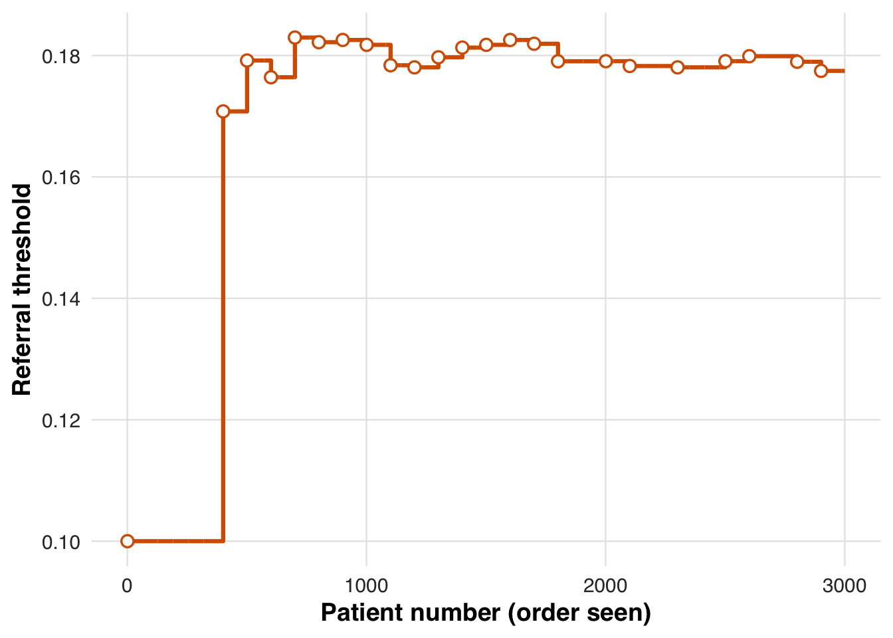
To assess how adaptation shaped allocation and behavior, we summarize referral rates and attendance outcomes across blocks.
# results tibble per block
res <- sim_out$results
# quick summaries
treat_by_block <- res |>
dplyr::group_by(block) |>
dplyr::summarise(
n = dplyr::n(),
treated = round(100 * mean(treat), 1),
outcome = round(100 * mean(outcome), 1),
threshold = dplyr::first(round(threshold_used*1000)/1000)
)
knitr::kable(treat_by_block, caption = "Block-level treatment and outcome rates with threshold used")| block | n | treated | outcome | threshold |
|---|---|---|---|---|
| 1 | 400 | 54.2 | 12.8 | 0.100 |
| 2 | 100 | 34.0 | 10.0 | 0.171 |
| 3 | 100 | 27.0 | 6.0 | 0.179 |
| 4 | 100 | 37.0 | 8.0 | 0.176 |
| 5 | 100 | 28.0 | 8.0 | 0.183 |
| 6 | 100 | 31.0 | 7.0 | 0.182 |
| 7 | 100 | 27.0 | 9.0 | 0.183 |
| 8 | 100 | 27.0 | 6.0 | 0.182 |
| 9 | 100 | 29.0 | 7.0 | 0.178 |
| 10 | 100 | 34.0 | 14.0 | 0.178 |
| 11 | 100 | 31.0 | 9.0 | 0.180 |
| 12 | 100 | 32.0 | 7.0 | 0.181 |
| 13 | 100 | 34.0 | 8.0 | 0.182 |
| 14 | 100 | 27.0 | 11.0 | 0.183 |
| 15 | 100 | 21.0 | 5.0 | 0.182 |
| 16 | 100 | 30.0 | 9.0 | 0.179 |
| 17 | 100 | 31.0 | 7.0 | 0.179 |
| 18 | 100 | 26.0 | 8.0 | 0.179 |
| 19 | 100 | 30.0 | 9.0 | 0.178 |
| 20 | 100 | 29.0 | 9.0 | 0.178 |
| 21 | 100 | 30.0 | 10.0 | 0.178 |
| 22 | 100 | 36.0 | 9.0 | 0.178 |
| 23 | 100 | 32.0 | 8.0 | 0.179 |
| 24 | 100 | 30.0 | 9.0 | 0.180 |
| 25 | 100 | 25.0 | 6.0 | 0.180 |
| 26 | 100 | 24.0 | 8.0 | 0.179 |
| 27 | 100 | 37.0 | 7.0 | 0.177 |
To visualize how treatment effects evolve across the risk spectrum, we fit a spline-based model using counterfactual risk representations. We first reduce the counterfactual risk space via PCA, retaining key variation in risk, and then estimate smooth outcome curves separately for treated and untreated patients. This step displays the fitted conditional mean functions for treated and untreated patients. It is the first stage of the adaptive RD estimator, from which we later extract the treatment effect at the threshold.
# Estimate treatment effect using splines
fit_out <- estimate_spline(sim_out, family=binomial())
# Plot
plot_spline_curves(fit_out, sim_out, pce_predict, attendance_prob, cohort_df, save_path = "figures/case1_spline_curves.rds")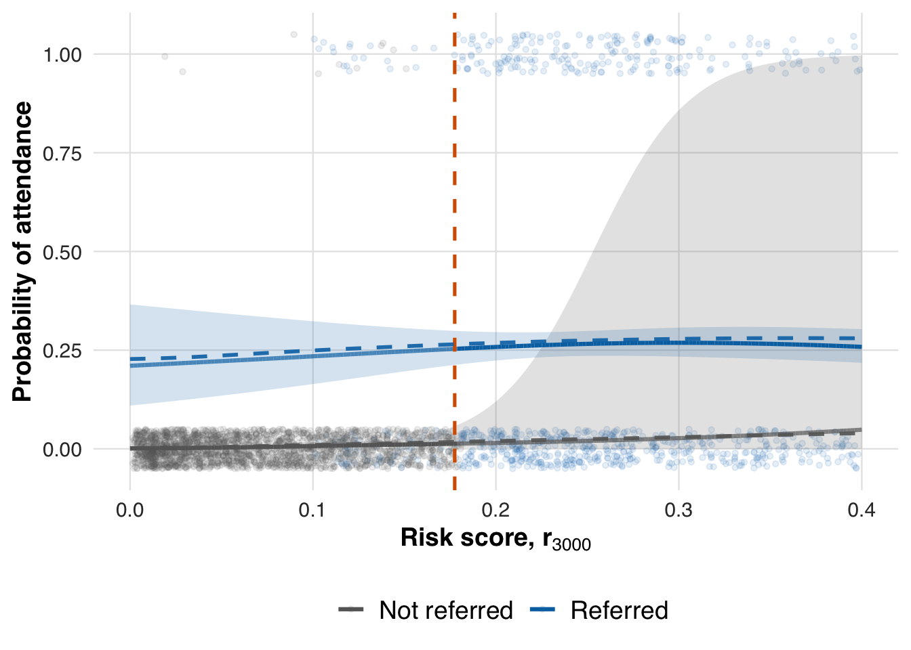
We now evaluate the estimated treatment effect at the adaptive threshold and compare it to the true effect from the data-generating process.
compare_ate_at_threshold(fit_out, sim_out, cohort_df, pce_predict, attendance_prob)| Metric | Value |
|---|---|
| Estimated ATE | 0.240 |
| 95% CI | [0.193, 0.288] |
| Truth | 0.247 |
| Bias | -0.007 |
| Coverage | Yes |
fit_out <- ate_naive(sim_out, family=binomial())This estimate reflects performance at the end of the simulation, after all patients have been processed. To evaluate how early data supports estimation, we also compute effects at earlier points in time, such as after 1,000 and 2,000 patients.
# n = 1000
sim_out_1000 <- within(sim_out, results <- results[1:1000, ])
fit_out_1000 <- estimate_spline(sim_out_1000, family = binomial())
plot_spline_curves(fit_out_1000, sim_out_1000, pce_predict, attendance_prob, cohort_df, save_path = "figures/case1_spline_curves_1000.rds")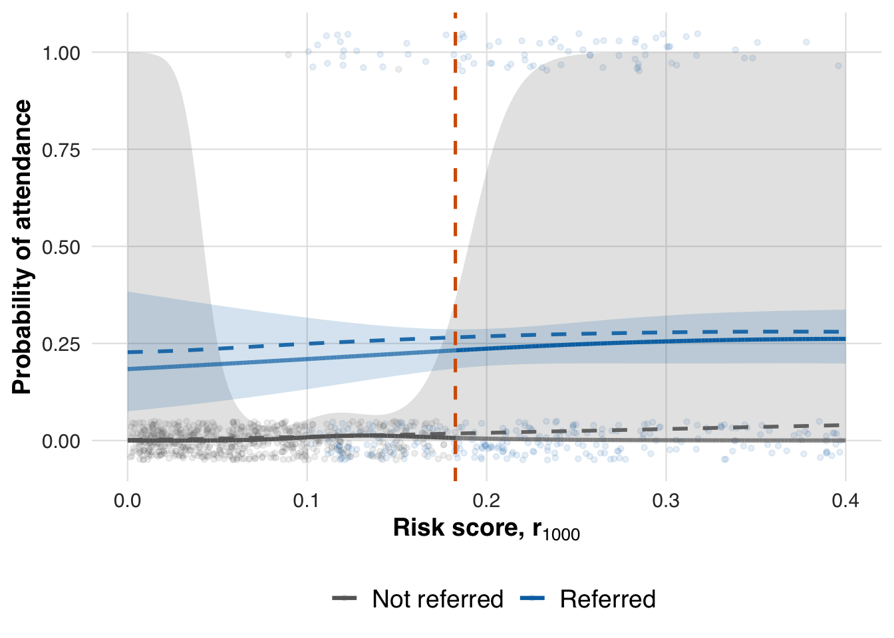
# n = 2000
sim_out_2000 <- within(sim_out, results <- results[1:2000, ])
fit_out_2000 <- estimate_spline(sim_out_2000, family = binomial())
plot_spline_curves(fit_out_2000, sim_out_2000, pce_predict, attendance_prob, cohort_df,
save_path = "figures/case1_spline_curves_2000.rds")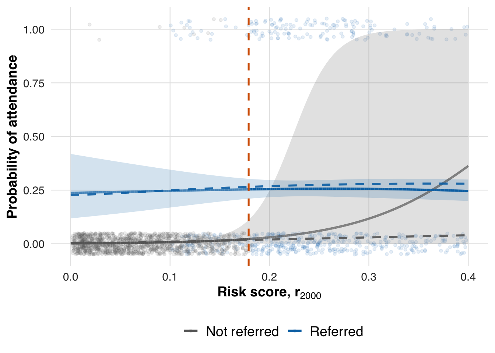
We now extract the local ATE at earlier time points to assess whether the threshold effect can be estimated reliably before the full sample is observed.
compare_ate_at_threshold(fit_out_1000, sim_out_1000, cohort_df, pce_predict, attendance_prob)| Metric | Value |
|---|---|
| Estimated ATE | 0.225 |
| 95% CI | [0.167, 0.284] |
| Truth | 0.248 |
| Bias | -0.022 |
| Coverage | Yes |
compare_ate_at_threshold(fit_out_2000, sim_out_2000, cohort_df, pce_predict, attendance_prob)| Metric | Value |
|---|---|
| Estimated ATE | 0.231 |
| 95% CI | [0.172, 0.291] |
| Truth | 0.247 |
| Bias | -0.016 |
| Coverage | Yes |
Prioritizing patients for a new lipid-lowering medication
In this second scenario, we move from a binary outcome (program attendance) to a continuous clinical outcome: the change in LDL cholesterol after starting a lipid-lowering medication. The adaptive threshold procedure is unchanged, but the underlying clinical question now differs. Instead of rationing limited program slots, we are prioritizing patients for a new therapy whose benefit increases with baseline risk.
Cholesterol-lowering medications, such as statins and newer agents like PCSK9 inhibitors, lower LDL cholesterol by 30–60%, with larger absolute reductions for patients who start with higher cholesterol. Our simulation mimics this: untreated patients may experience some background drift, while treated patients receive a reduction in LDL that grows with their baseline risk. This setup allows us to examine adaptive RD in a context where treatment effects are continuous and heterogeneous, contrasting with the earlier scenario’s binary outcome and resource constraint.
Formally, the data-generating process models the expected change in LDL cholesterol as a function of baseline risk and treatment assignment, with the treatment effect increasing for higher-risk patients:
\[ \mathbb{E}[Y_i \mid A_i=a, X_i=x] = \gamma_0 + \gamma_1\big(\text{Chol}_i-130\big) + a\Big(\delta_0 + \delta_1\big(\text{Chol}_i-130\big)\Big), \] where \(\gamma_0,\gamma_1\) represent background drift without therapy, and \(\delta_0, \delta_1\) capture the medication effect that increases with baseline cholesterol. This is implemented in R as follows:
# --- Outcome: Follow-up total cholesterol level-----
# Parameters
cholest_params <- list(
treatment_effect_intercept = 0.00, # shift for treated
treatment_effect_slope = -10.00, # effect scales with risk
reference_intercept = 2.00, # baseline drift
reference_slope = 0.00, # dependence on baseline_sbp
within_sd = 5.00 # residual SD
)
# Mean model: expected change in cholesterol
cholest_mean <- function(cohort_df, idx, risk_baseline, treat, params = cholest_params) {
mu <- params$reference_intercept +
params$reference_slope * risk_baseline +
treat * (params$treatment_effect_intercept +
params$treatment_effect_slope * risk_baseline)
mu
}
# Outcome generator: draws cholesterol change given the mean model
outcome_cholest <- function(cohort_df, idx, risk_baseline, treat, params = cholest_params) {
mu <- cholest_mean(cohort_df, idx, risk_baseline, treat, params = params)
stats::rnorm(n = length(idx), mean = mu, sd = params$within_sd)
}We now simulate how treatment decisions unfold under this continuous outcome setting. The simulate_design() function again processes patients in chronological blocks: it calculates risk using pce_predict(), applies the adaptive threshold to assign medication, and generates cholesterol outcomes using outcome_cholest(). As before, the prediction model is held fixed, so changes in treatment allocation arise solely from threshold adaptation rather than model updating.
#--- run the simulation ----
sim_out <- simulate_design(
cohort_df = cohort_df,
risk_fn = pce_predict,
initial_block_size = 400, # warm-up
block_size = 100, # subsequent blocks
n_blocks = 26, # total post–warm-up blocks
threshold_adapt_method = threshold_method_quantile,
model_adapt_method = model_method_none,
outcome_fn = outcome_cholest
)As in the first scenario, the threshold fluctuates early while the system learns but eventually stabilizes, here converging near 18%, marking the risk level at which treatment becomes consistently prioritized.
plot_threshold_trajectory(sim_out, save_path = "figures/case2_threshold_trajectory.rds")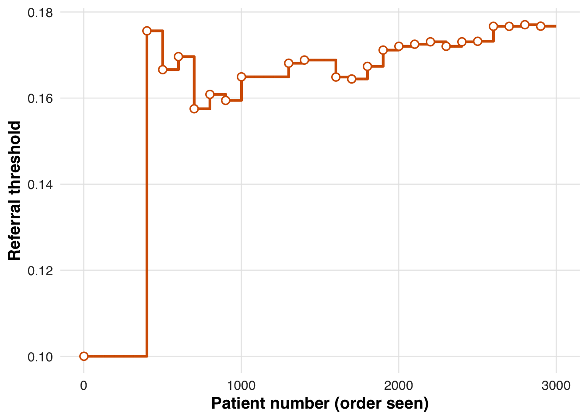
As before, we summarize each block to monitor how the adaptive threshold influences treatment allocation and average cholesterol outcomes over time.
# results tibble per block
res <- sim_out$results
# quick summaries
treat_by_block <- res |>
dplyr::group_by(block) |>
dplyr::summarise(
n = dplyr::n(),
treated = round(100 * mean(treat), 1),
outcome = round(100 * mean(outcome), 1),
threshold = dplyr::first(round(threshold_used*1000)/1000)
)
knitr::kable(treat_by_block, caption = "Block-level treatment and outcome rates with threshold used")| block | n | treated | outcome | threshold |
|---|---|---|---|---|
| 1 | 400 | 48 | 100.8 | 0.100 |
| 2 | 100 | 22 | 120.8 | 0.176 |
| 3 | 100 | 31 | 38.9 | 0.167 |
| 4 | 100 | 20 | 238.9 | 0.170 |
| 5 | 100 | 34 | 39.2 | 0.158 |
| 6 | 100 | 28 | 147.9 | 0.161 |
| 7 | 100 | 39 | 45.1 | 0.159 |
| 8 | 100 | 30 | 150.0 | 0.165 |
| 9 | 100 | 30 | 64.1 | 0.165 |
| 10 | 100 | 36 | 14.3 | 0.165 |
| 11 | 100 | 31 | 158.0 | 0.168 |
| 12 | 100 | 30 | 68.2 | 0.169 |
| 13 | 100 | 22 | 158.1 | 0.169 |
| 14 | 100 | 29 | 118.9 | 0.165 |
| 15 | 100 | 37 | 117.4 | 0.164 |
| 16 | 100 | 40 | 122.4 | 0.167 |
| 17 | 100 | 35 | 130.7 | 0.171 |
| 18 | 100 | 32 | 74.6 | 0.172 |
| 19 | 100 | 31 | 24.9 | 0.173 |
| 20 | 100 | 27 | 46.2 | 0.173 |
| 21 | 100 | 34 | 96.0 | 0.172 |
| 22 | 100 | 31 | 122.4 | 0.173 |
| 23 | 100 | 49 | 67.5 | 0.173 |
| 24 | 100 | 29 | 115.8 | 0.177 |
| 25 | 100 | 34 | 89.2 | 0.177 |
| 26 | 100 | 28 | 44.3 | 0.177 |
| 27 | 100 | 36 | 55.1 | 0.177 |
As before, we estimate the average potential outcomes under each treatment condition across the risk spectrum, using data from the full sample.
# Estimate treatment effect using splines
fit_out <- estimate_spline(sim_out, family=gaussian())
# Plot
plot_spline_curves(
fit_out, sim_out, pce_predict, cholest_mean, cohort_df,
y_lab = "Change in Cholesterol, mg/dL",
labels = c("No Medication", "Medication"),
save_path = "figures/case2_spline_curves.rds"
)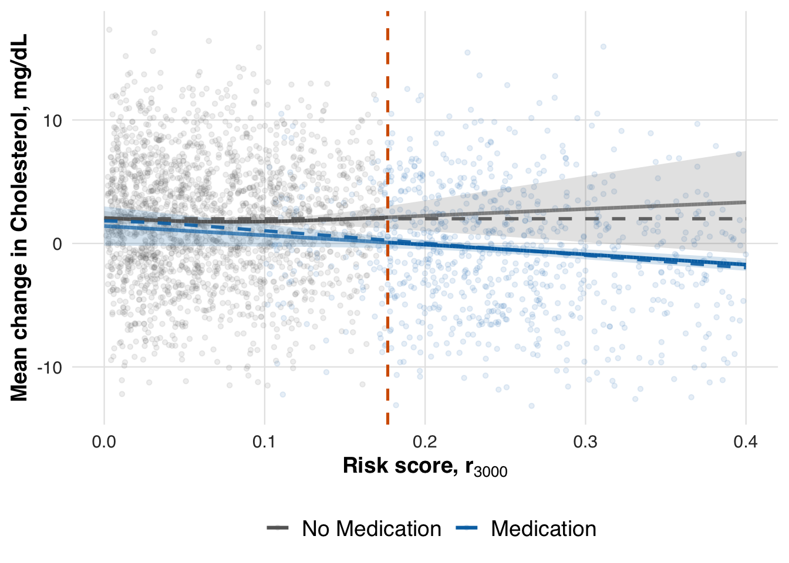
We now evaluate the estimated treatment effect at the adaptive threshold. As in earlier scenarios, we use the fitted conditional mean functions to compute the local ATE at the most recent threshold. This allows us to assess whether the treatment effect, which increases with baseline cholesterol, is accurately captured by the adaptive RD estimator.
# -- ATE at last risk threshold
compare_ate_at_threshold(fit_out, sim_out, cohort_df, pce_predict, cholest_mean)| Metric | Value |
|---|---|
| Estimated ATE | -2.035 |
| 95% CI | [-3.063, -1.006] |
| Truth | -1.742 |
| Bias | -0.293 |
| Coverage | Yes |
Balancing benefit and burden through number needed to treat
In this third scenario, we again consider the use of a lipid-lowering medication, but the decision threshold now adapts based on a clinically meaningful performance metric: the number needed to treat (NNT). Unlike the prior scenario, where the threshold adapted to maintain a fixed treatment rate, the NNT-based rule seeks to treat patients for whom the expected benefit is large enough to justify the burden of treatment. This setup illustrates how adaptive RD designs can be tailored to reflect not just resource constraints, but benefit–burden trade-offs in clinical decision-making.
NNT provides a clinically intuitive way to interpret treatment benefit by asking how many patients must be treated for one to meaningfully benefit. For binary outcomes, it is the inverse of the risk difference. For continuous outcomes like LDL reduction, we translate the treatment effect into a standardized effect size (Cohen’s d) and compute NNT using [ = , ] where () is the standard normal CDF. Smaller NNT values indicate stronger benefit relative to treatment burden. In this scenario, we target an NNT of 3, meaning that roughly two out of every three treated patients are expected to experience a clinically meaningful reduction in LDL cholesterol.
target_nnt <- 3 # 3 persons
plot_cohen_d_to_nnt(target_nnt, save_path = "figures/case3_cohen_d_to_nnt.rds")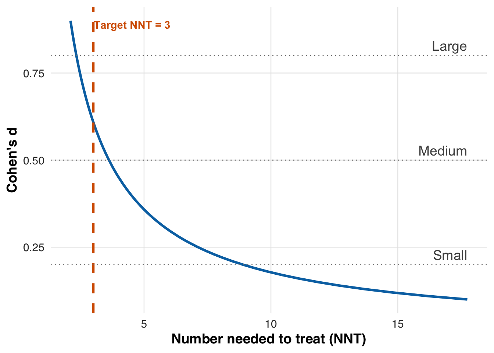
From the plot, we see that a target NNT of 3 corresponds to a Cohen’s \(d\) of 0.61. This value defines the effect size we aim to achieve through threshold adaptation.
target_d <- sqrt(2) * qnorm(0.5 * (1 + 1 / target_nnt))
scales::number(target_d, accuracy = 0.01)[1] "0.61"This is considered a medium to large effect size. In our simulation, each one-unit increase in PCE-predicted risk corresponds to an average 10 mg/dL LDL reduction from treatment, with a residual standard deviation of 5 mg/dL. As a result, Cohen’s \(d\) increases linearly with risk, starting at 0 for low-risk patients and reaching 2 for those at 100% risk. The figure below plots this relationship and indicates the risk threshold that yields the target NNT.
plot_risk_to_cohen_d(
target_d,
cholest_params$treatment_effect_slope,
cholest_params$within_sd,
save_path = "figures/case3_risk_to_cohen_d.rds"
)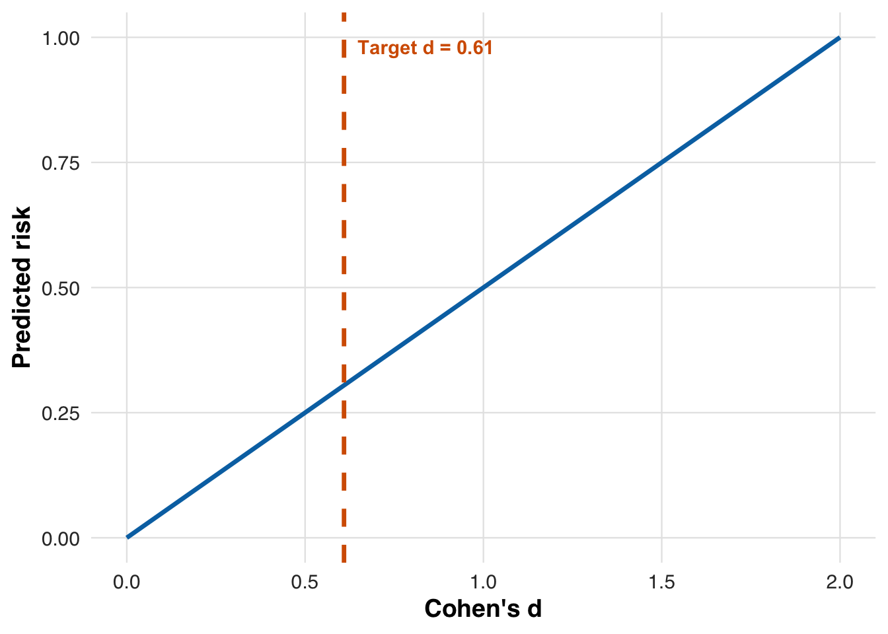
The solid line shows how Cohen’s \(d\) increases linearly with risk, reflecting that treatment benefit scales with risk.
We define the adaptive threshold rule to search for the risk level where the estimated treatment effect achieves the target NNT.
# NNT adaptation: set threshold so that we target a specific NNT
threshold_method_nnt <- list(
type = "nnt",
initial_threshold = 0.10, # initial_threshold,
desired_nnt = target_nnt # Target NNT
) Like before, we begin with an initial threshold of 10%, then update it after each patient block to target an NNT of 3. We estimate the treatment effect across risk values using past data, standardize it via the pooled standard deviation, and search for the risk level yielding a Cohen’s \(d\) near 0.61 (corresponding to NNT = 3). Let this estimate after block \(b\) be \(r_{*,b}\). To reduce noise, we smooth updates by averaging the new and previous thresholds: \[ r_{b+1} = \tfrac{1}{2} r_{*,b} + \tfrac{1}{2} r_b, \] where \(r_b\) is the risk used in block \(b\). This procedure assumes the treatment effect increases with risk—a strong assumption, but one that holds in our setup, since higher-risk patients are expected to see larger LDL reductions.
We now rerun the simulation, this time using the NNT-based rule to adapt the threshold based on estimated treatment benefit.
#--- run the simulation ----
sim_out <- simulate_design(
cohort_df = cohort_df,
risk_fn = pce_predict,
initial_block_size = 400, # warm-up
block_size = 100, # subsequent blocks
n_blocks = 26, # total post–warm-up blocks
threshold_adapt_method = threshold_method_nnt,
model_adapt_method = model_method_none,
outcome_fn = outcome_cholest
)We plot how the threshold evolves under the NNT-based rule. After early fluctuations, it settles near 30%, indicating that patients above this risk level are consistently prioritized for treatment based on the target NNT.
plot_threshold_trajectory(sim_out, save_path = "figures/case3_threshold_trajectory.rds")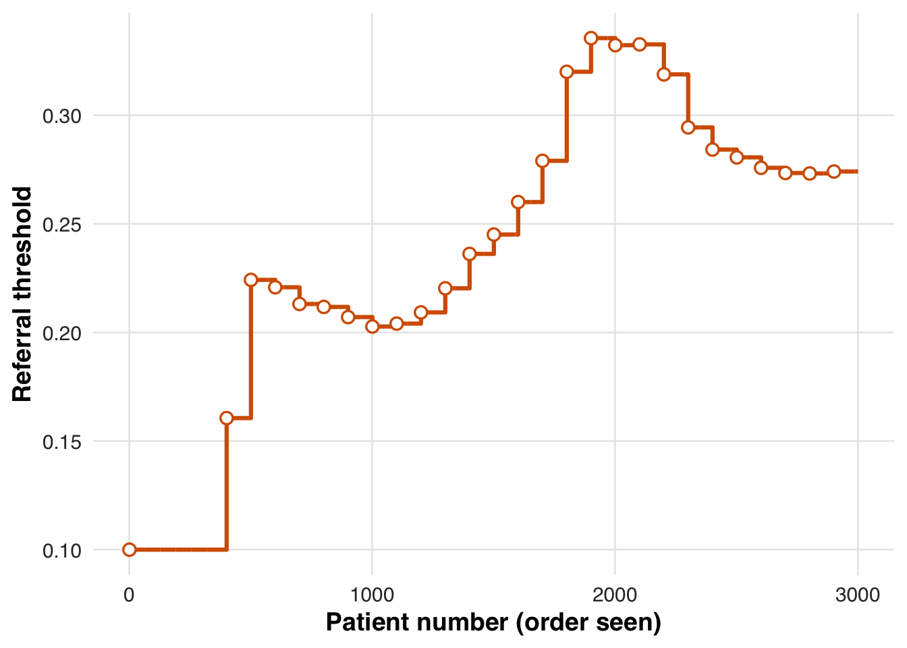
We also report the proportion of patients treated (i.e., prescribed the medication) and the average change in LDL cholesterol (i.e., the outcome) in each block.
# results tibble per block
res <- sim_out$results
# quick summaries
treat_by_block <- res |>
dplyr::group_by(block) |>
dplyr::summarise(
n = dplyr::n(),
treated = round(100 * mean(treat), 1),
outcome = round(100 * mean(outcome), 1),
threshold = dplyr::first(round(threshold_used*1000)/1000)
)
knitr::kable(treat_by_block, caption = "Block-level treatment and outcome rates with threshold used")| block | n | treated | outcome | threshold |
|---|---|---|---|---|
| 1 | 400 | 54.5 | 81.3 | 0.100 |
| 2 | 100 | 26.0 | 108.7 | 0.161 |
| 3 | 100 | 23.0 | 103.7 | 0.224 |
| 4 | 100 | 17.0 | 92.6 | 0.221 |
| 5 | 100 | 23.0 | 47.5 | 0.213 |
| 6 | 100 | 19.0 | 181.4 | 0.212 |
| 7 | 100 | 20.0 | 135.6 | 0.207 |
| 8 | 100 | 17.0 | 209.0 | 0.203 |
| 9 | 100 | 27.0 | 90.1 | 0.204 |
| 10 | 100 | 29.0 | 54.6 | 0.209 |
| 11 | 100 | 19.0 | 160.4 | 0.220 |
| 12 | 100 | 19.0 | 166.8 | 0.236 |
| 13 | 100 | 17.0 | 216.5 | 0.245 |
| 14 | 100 | 14.0 | 236.3 | 0.260 |
| 15 | 100 | 11.0 | 121.3 | 0.279 |
| 16 | 100 | 8.0 | 200.2 | 0.320 |
| 17 | 100 | 9.0 | 2.0 | 0.336 |
| 18 | 100 | 12.0 | 227.2 | 0.332 |
| 19 | 100 | 8.0 | 183.2 | 0.333 |
| 20 | 100 | 7.0 | 207.5 | 0.319 |
| 21 | 100 | 13.0 | 132.8 | 0.294 |
| 22 | 100 | 12.0 | 161.6 | 0.284 |
| 23 | 100 | 11.0 | 165.3 | 0.281 |
| 24 | 100 | 15.0 | 164.1 | 0.276 |
| 25 | 100 | 14.0 | 37.7 | 0.273 |
| 26 | 100 | 16.0 | 65.7 | 0.273 |
| 27 | 100 | 15.0 | 63.8 | 0.274 |
As before, we estimate the average potential outcomes under each treatment condition across the risk spectrum, using data from the full sample. This step reveals how treatment benefit varies with predicted risk and allows us to evaluate whether the adaptive RD estimator recovers the expected heterogeneity.
# Estimate treatment effect using splines
fit_out <- estimate_spline(sim_out, family=gaussian())
# Plot
plot_spline_curves(
fit_out, sim_out, pce_predict, cholest_mean, cohort_df,
y_lab = "Change in Cholesterol, mg/dL",
labels = c("No Medication", "Medication"),
save_path = "figures/case3_spline_curves.rds"
)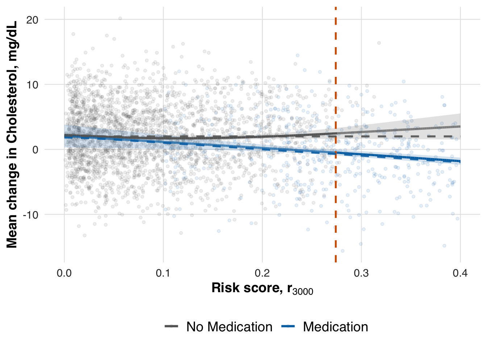
We now evaluate the estimated treatment effect at the adaptive threshold. As in earlier scenarios, we extract the local ATE using the fitted conditional means. This allows us to assess whether the adaptive RD estimator accurately recovers the effect size that guided the NNT-based threshold adaptation.
# -- ATE at last risk threshold
compare_ate_at_threshold(fit_out, sim_out, cohort_df, pce_predict, cholest_mean)| Metric | Value |
|---|---|
| Estimated ATE | -2.954 |
| 95% CI | [-3.902, -2.007] |
| Truth | -2.696 |
| Bias | -0.259 |
| Coverage | Yes |
Recalibrating the risk model
In the fourth scenario, we shift focus from adapting the treatment threshold to updating the prediction model itself. The outcome is a cardiovascular event, simulated as a binary variable indicating whether the patient experiences an ASCVD event during follow-up. Specifically, we consider a setting where the original risk model is miscalibrated—underestimating cardiovascular event risk for high-risk patients and overestimating it for low-risk ones. To address this mismatch, we implement a recalibration strategy that applies an affine transformation to the model’s linear predictor, allowing it to better align predicted and actual risks over time.
The simulated outcome is the occurrence of an ASCVD event, generated using a miscalibrated version of the pooled cohort equations. Specifically, for each patient, we recompute baseline risk and apply an affine transformation to the linear predictor to introduce systematic calibration error. Let ( {R}_{i,1} ) be the original predicted risk, transformed to the log–log scale as ( i =* (-(1 - {R}{i,1})) ). The true event probability is then given by [ p_i = 1 - , ] where ( A_i ) indicates treatment, ( _0 ) and ( _1 ) control baseline drift and slope, and ( ) represents the treatment effect. Events are drawn as Bernoulli(( p_i )), creating a nonlinear relationship between risk and outcome that challenges the adaptive estimator.
# --- Outcome: Cardiovascular event -----
# Parameters
cvd_params <- list(
treatment_effect_intercept = 0.4, # shift for treated
baseline_intercept = 0.1, # baseline drift
baseline_slope = 0.9 # dependence on baseline_sbp
)
# ---- Simulated probability (pce model is inaccurate) ----
cvd_prob <- function(cohort_df, idx, risk_baseline, treat, params = cvd_params) {
# Copy df for local edits
df <- cohort_df[idx, ]
# Recompute baseline risk with updated labels
risk_new <- pce_predict(df, coefs = pce_coefs, coef_adjust = NULL)
# Get on linear predictor scale
lp_new <- log(-log(1-risk_new))
# Apply affine transformation
lp_new <- params$baseline_intercept +
params$baseline_slope * lp_new +
params$treatment_effect_intercept * treat
# Transform back to response scale
p <- 1 - exp(-exp(lp_new))
# Return probability
return(p)
}
outcome_cvd <- function(cohort_df, idx, risk_baseline, treat, params = cvd_params) {
p <- cvd_prob(cohort_df, idx, risk_baseline, treat, params)
stats::rbinom(n = length(idx), size = 1, prob = p)
}We visualize the mismatch between predicted and true risk by plotting how the affine transformation alters the original predictions. The model tends to underestimate risk for higher-risk patients and overestimate it for lower-risk ones, motivating the need for recalibration.
plot_affine_risk_transform(cvd_params$baseline_slope, cvd_params$baseline_intercept,
save_path = "figures/case4_risk_transform.rds") 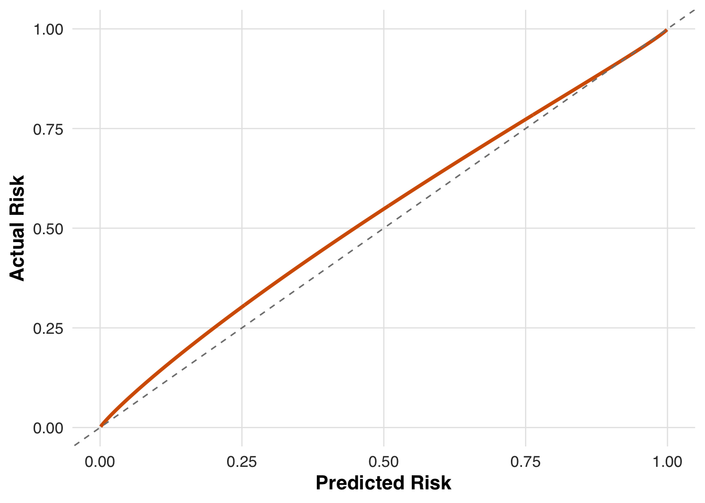
We now define the model adaptation strategy using recalibration, as shown in the next block. Recalibration modifies the model’s linear predictor through an affine transformation to better align predictions with observed outcomes. It begins from the original PCE coefficients and updates them gradually. The shrinkage_factor controls how strongly new estimates are pulled toward the original values, using a weight of (1 / (1 + n / )), where (n) is the number of patients contributing to the update. This ensures the model adapts slowly rather than overreacting to recent data.
# Recalibrate model
model_method_recalibrate <- list(
type = "recalibrate",
coef_original = pce_coefs,
coef_adjusted = NULL,
shrinkage_factor = 3000
)We now simulate the full adaptive design under this recalibrated model. As in previous scenarios, patients are processed in chronological blocks. The recalibrated model is used to compute risk, and the adaptive threshold is updated to maintain the desired referral rate. Outcomes are then generated using the cardiovascular event mechanism. This setup allows us to examine how model adaptation interacts with threshold adaptation in guiding treatment decisions.
#--- run the simulation ----
sim_out <- simulate_design(
cohort_df = cohort_df,
risk_fn = pce_predict,
initial_block_size = 400, # warm-up
block_size = 100, # subsequent blocks
n_blocks = 26, # total post–warm-up blocks
threshold_adapt_method = threshold_method_quantile,
model_adapt_method = model_method_recalibrate,
outcome_fn = outcome_cvd
)To assess how recalibration alters individual risk estimates over time, we track how predicted risk evolves for the first 100 patients in the cohort. As the model updates, these patients’ risk scores are re-evaluated at each block, illustrating how gradual calibration shifts can change clinical prioritization.
plot_risk_trajectory(sim_out, save_path = "figures/case4_risk_trajectory.rds")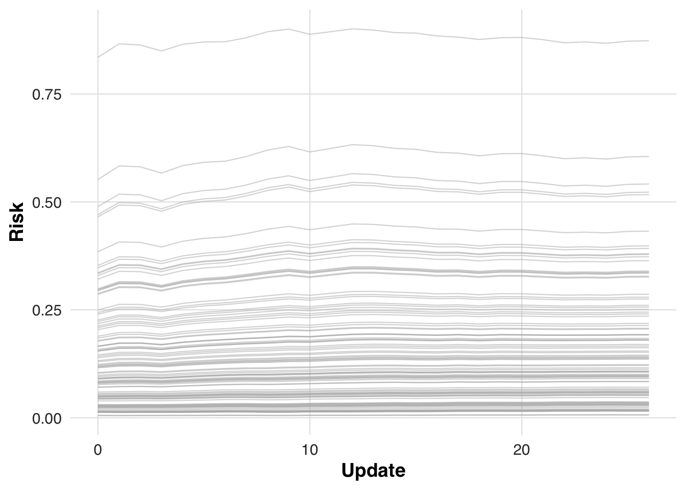
We report block-level referral rates and ASCVD event rates (treated = referral; outcome = ASCVD event) to monitor how model and threshold updates affect allocation and observed incidence.
# results tibble per block
res <- sim_out$results
# quick summaries
treat_by_block <- res |>
dplyr::group_by(block) |>
dplyr::summarise(
n = dplyr::n(),
treated = round(100 * mean(treat), 1),
outcome = round(100 * mean(outcome), 1),
threshold = dplyr::first(round(threshold_used*1000)/1000)
)
knitr::kable(treat_by_block, caption = "Block-level treatment and outcome rates with threshold used")| block | n | treated | outcome | threshold |
|---|---|---|---|---|
| 1 | 400 | 46.8 | 23.2 | 0.100 |
| 2 | 100 | 37.0 | 20.0 | 0.158 |
| 3 | 100 | 37.0 | 23.0 | 0.171 |
| 4 | 100 | 29.0 | 26.0 | 0.174 |
| 5 | 100 | 40.0 | 29.0 | 0.171 |
| 6 | 100 | 27.0 | 20.0 | 0.181 |
| 7 | 100 | 29.0 | 17.0 | 0.183 |
| 8 | 100 | 35.0 | 25.0 | 0.185 |
| 9 | 100 | 26.0 | 20.0 | 0.189 |
| 10 | 100 | 40.0 | 26.0 | 0.190 |
| 11 | 100 | 24.0 | 21.0 | 0.195 |
| 12 | 100 | 34.0 | 24.0 | 0.192 |
| 13 | 100 | 35.0 | 24.0 | 0.197 |
| 14 | 100 | 35.0 | 18.0 | 0.201 |
| 15 | 100 | 28.0 | 14.0 | 0.202 |
| 16 | 100 | 32.0 | 23.0 | 0.201 |
| 17 | 100 | 34.0 | 21.0 | 0.201 |
| 18 | 100 | 37.0 | 16.0 | 0.202 |
| 19 | 100 | 33.0 | 23.0 | 0.204 |
| 20 | 100 | 30.0 | 17.0 | 0.203 |
| 21 | 100 | 27.0 | 16.0 | 0.205 |
| 22 | 100 | 27.0 | 23.0 | 0.204 |
| 23 | 100 | 30.0 | 18.0 | 0.203 |
| 24 | 100 | 30.0 | 19.0 | 0.203 |
| 25 | 100 | 30.0 | 17.0 | 0.203 |
| 26 | 100 | 35.0 | 22.0 | 0.203 |
| 27 | 100 | 37.0 | 18.0 | 0.204 |
We now estimate the conditional mean outcome curves under each treatment arm across the risk spectrum. This step visualizes how predicted risk relates to event probability for treated and untreated patients.
# Estimate treatment effect using splines
fit_out <- estimate_spline(sim_out, family=binomial())
# Plot
plot_spline_curves(fit_out, sim_out, pce_predict, cvd_prob, cohort_df,
y_lab = "Probability of cardiovascular event",
labels = c("No Medication", "Medication"),
save_path = "figures/case4_spline_curves.rds")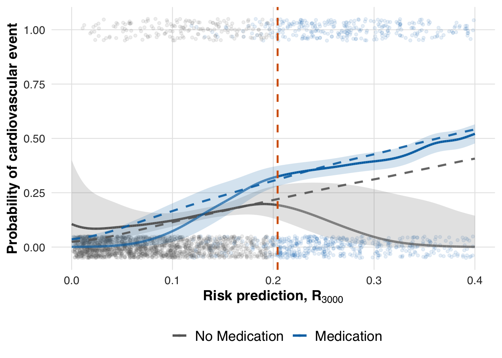
Finally, we evaluate the estimated treatment effect at the most recent threshold by computing the local ATE using the fitted conditional mean functions.
# -- ATE at last risk threshold
compare_ate_at_threshold(fit_out, sim_out, cohort_df, pce_predict, cvd_prob)| Metric | Value |
|---|---|
| Estimated ATE | 0.132 |
| 95% CI | [0.039, 0.225] |
| Truth | 0.090 |
| Bias | 0.042 |
| Coverage | Yes |
Revising model to remove race and gender
In the final scenario, we simulate a model revision that removes race and gender from the risk prediction model. This reflects recent efforts to eliminate demographic variables from clinical algorithms. We evaluate how such changes affect predicted risk, treatment allocation, and estimation of treatment effects.
The code block below specifies the model revision strategy. Starting from the original PCE coefficients, we remove the terms for race and gender and use the revised model to compute updated risk scores. The shrinkage factor is again applied to gradually blend the revised coefficients with the original ones as more data accumulate, providing a smoothed transition away from demographic-based predictions.
# Revise model
model_method_revise <- list(
type = "revise",
coef_original = pce_coefs,
coef_adjusted = NULL,
shrinkage_factor = 3000
)Below, we simulate the full adaptive design using the revised model without race and gender. Risk is recalculated using the updated coefficients, and both the threshold and model continue to adapt over time.
#--- run the simulation ----
sim_out <- simulate_design(
cohort_df = cohort_df,
risk_fn = pce_predict,
initial_block_size = 400, # warm-up
block_size = 100, # subsequent blocks
n_blocks = 26, # total post–warm-up blocks
threshold_adapt_method = threshold_method_quantile,
model_adapt_method = model_method_revise,
outcome_fn = outcome_cvd
)We plot how predicted risks evolve for the first 100 patients under the revised model to illustrate how risk estimates change over time.
plot_risk_trajectory(sim_out, save_path = "figures/case5_risk_trajectory.rds")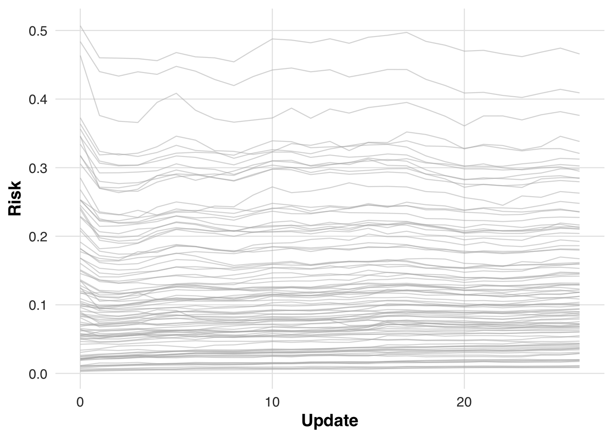
We now estimate the conditional mean outcome curves under each treatment arm using the revised model without race and gender. This shows how treatment effects vary with risk when demographic predictors are excluded.
# Estimate treatment effect using splines
fit_out <- estimate_spline(sim_out, family=binomial())
# Plot
plot_spline_curves(fit_out, sim_out, pce_predict, cvd_prob, cohort_df,
y_lab = "Probability of cardiovascular event",
labels = c("No Medication", "Medication"),
save_path = "figures/case5_spline_curves.rds")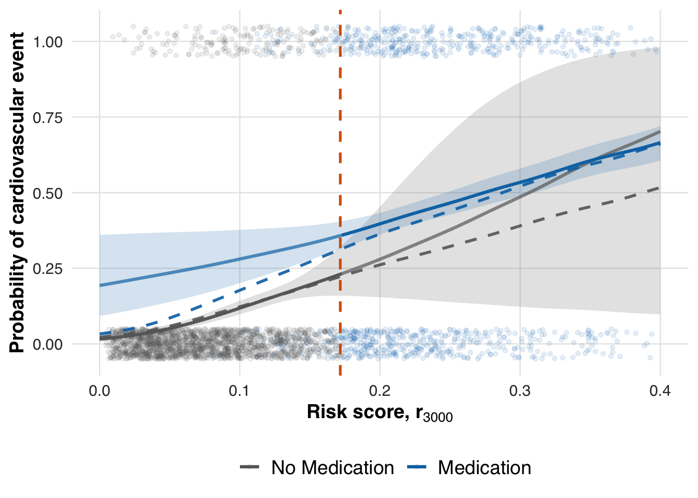
Lastly, we compute the local ATE at the updated threshold to assess how removing race and gender affects the estimated treatment effect.
# -- ATE at last risk threshold
compare_ate_at_threshold(fit_out, sim_out, cohort_df, pce_predict, cvd_prob)| Metric | Value |
|---|---|
| Estimated ATE | 0.128 |
| 95% CI | [0.034, 0.221] |
| Truth | 0.090 |
| Bias | 0.038 |
| Coverage | Yes |
Save panels
We combine individual scenario figures into multi-panel layouts to create concise visual summaries. The first panel assembles threshold-adaptation scenarios, while the second highlights model-adaptation scenarios. These panels are saved as high-resolution files for inclusion in the manuscript.
# Figure for threshold adaptation
fig_files <- matrix(c(
"figures/case1_threshold_trajectory.rds", # upper left
"figures/case3_cohen_d_to_nnt.rds", # lower left
"figures/case1_spline_curves.rds", # upper middle
"figures/case3_risk_to_cohen_d.rds", # lower middle
"figures/case2_spline_curves.rds", # upper right
"figures/case3_spline_curves.rds" # lower right
), nrow = 2, byrow = FALSE) # <-- KEY CHANGE
# Build and save the panel as EPS
save_panel_from_rds(fig_files, filename = "figures/fig_threshold_adaptation.pdf", width = 16, height = 10)
# Figure for model adaptation
fig_files <- matrix(c(
"figures/case4_risk_transform.rds", # row 1
"figures/case4_risk_trajectory.rds", # row 2
"figures/case4_spline_curves.rds", # row 3
"figures/case5_spline_curves.rds" # row 4
), nrow = 4, byrow = FALSE) # <-- KEY CHANGE
# Build and save the panel as EPS
save_panel_from_rds(fig_files, filename = "figures/fig_model_adaptation.pdf", width = 9, height = 18)